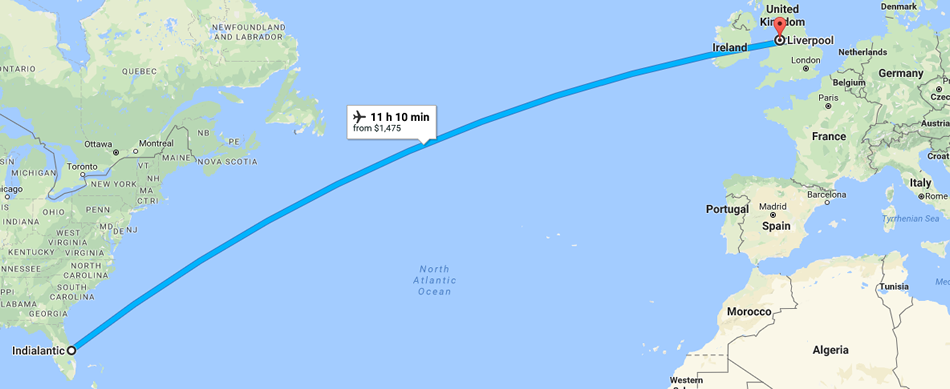

Interactive Map
Place mouse over travel points to see info
| #2 | Liverpool, UK |
|---|---|
| Distance: | 6737.85km |
| Dist from Mel: | 6737.85km |
| Disp from Mel: | 6737.85km |
| Time: | 11.2 |
| Velocity: | 601.7km/h@30 N of E |

| #3 | Kingston Uni. UK |
|---|---|
| Distance: | 362.25km |
| Dist from Mel: | 7100.1km |
| Disp from Mel: | 6956.81km |
| Time: | 4.09hrs |
| Velocity: | 88.6km/h@50 S of E |

| #4 | London, UK |
|---|---|
| Distance: | 18.68km |
| Dist from Mel: | 7188.78km |
| Disp from Mel: | 6966.47km |
| Time: | 0.21hrs |
| Velocity: | 88.6km/h@45 N of E |

| #5 | Cologne, DE |
|---|---|
| Distance: | 590.87km |
| Dist from Mel: | 7709.65km |
| Disp from Mel: | 7459.13km |
| Time: | 6.67hrs |
| Velocity: | 88.6km/h@10 S of E |

| #6 | Hamburg, DE |
|---|---|
| Distance: | 425.04km |
| Dist from Mel: | 8134.69km |
| Disp from Mel: | 7570.22km |
| Time: | 4.8hrs |
| Velocity: | 88.6km/h@60 N of E |

| #7 | Berlin, DE |
|---|---|
| Distance: | 288.19km |
| Dist from Mel: | 8422.88km |
| Disp from Mel: | 7822.99km |
| Time: | 3.25hrs |
| Velocity: | 88.6km/h@60 E of S |

| #8 | Das Autobahn, DE |
|---|---|
| Distance: | 450.8km |
| Dist from Mel: | 8873.68km |
| Disp from Mel: | 7753.76km |
| Time: | 5.09hrs |
| Velocity: | 88.6km/h@60 W of S |

| #9 | Munich, DE |
|---|---|
| Distance: | 217.35km |
| Dist from Mel: | 9091.03km |
| Disp from Mel: | 7774.69km |
| Time: | 2.45hrs |
| Velocity: | 88.6km/h@20 W of S |

| #10 | Frankfurt, DE |
|---|---|
| Distance: | 392.84km |
| Dist from Mel: | 9483.87km |
| Disp from Mel: | 7604.03km |
| Time: | 4.44hrs |
| Velocity: | 88.6km/h@45 N of W |

| #11 | Paris, FR |
|---|---|
| Distance: | 587.65km |
| Dist from Mel: | 10071.52km |
| Disp from Mel: | 7204.75km |
| Time: | 6.64hrs |
| Velocity: | 88.6km/h@15 S of W |
Data Involved
for a more detailed version, download the spreadsheet here
| Measurement km | Melbourne, FL | Liverpool, UK | Kingston Uni. UK | London, UK | Cologne, DE | Hamburg, DE | Berlin, DE | Autobahn, DE | Munich, DE | Frankfurt, DE | Paris, FR | Melbourne, FL |
|---|---|---|---|---|---|---|---|---|---|---|---|---|
| Distance (km) | 0 | 6737.85 | 362.25 | 18.68 | 590.87 | 425.04 | 288.19 | 450.8 | 217.35 | 392.84 | 587.65 | 7204.75 |
| Distance from Melbourne (km) | 0 | 6737.85 | 7100.1 | 7188.78 | 7709.65 | 8134.69 | 8422.88 | 8873.68 | 9091.03 | 9483.87 | 10071.52 | 17276.27 |
| Displacement from Melbourne (km) | 0 | 6737.85 | 6956.81 | 6966.47 | 7459.13 | 7570.22 | 7822.99 | 7753.76 | 7774.69 | 7604.03 | 7204.75 | 0 |
| Time (hrs) | 0 | 11.2 | 4.09 | 0.21 | 6.67 | 4.8 | 3.25 | 5.09 | 2.45 | 4.44 | 6.64 | 12.9 |
| Velocity (km/h) | 0 | 601.7km/h@30 N of E | 88.6km/h@50 S of E | 88.6km/h@45 N of E | 88.6km/h@10 S of E | 88.6km/h@60 N of E | 88.6km/h@60 E of S | 88.6km/h@60 W of S | 88.6km/h@20 W of S | 88.6km/h@45 N of W | 88.6km/h@15 S of W | 558.5km/h@15 S of W |
Total Distance: 17276.27km
Total Displacement: 0